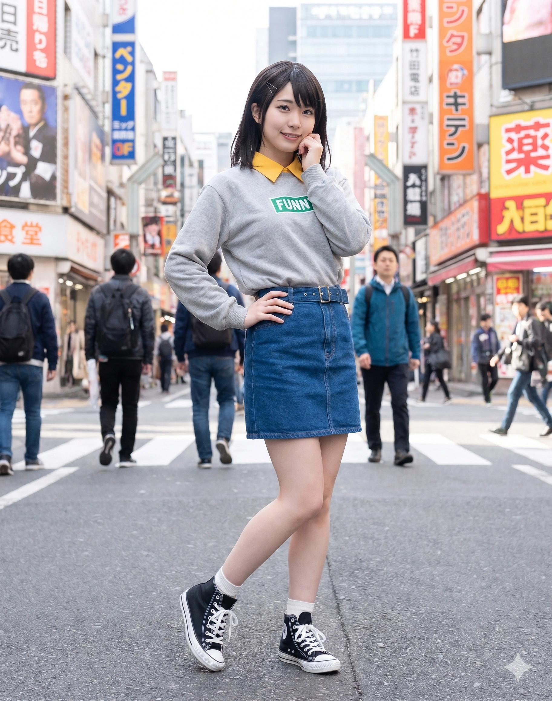

"인생은 뭐든지 적당한 게 좋지~ ...하아, 난 그냥 시급 센 상점가 인형탈 알바를 하고 싶었던 것뿐이었는데, 효빈시에는 카오루랑 하구미, 마야도 없고 '마루야마 아야(丸山彩)' 씨는 아흔세 살 할아버지 전직 시장님(환산채 옹)이셔서 두 밴드가 합병하는 바람에... 어쩌다 현마음(코코로)뿐만 아니라 허아영(히나) 선배, 양이브까지 4차원 세 명의 작·편곡과 매니지먼트를 내가 다 독박 쓰고 있는 걸까..." "원장님, 한여름에도 핑크 곰돌이 탈 안 벗으세요? 라니... 애들 보는 앞에서 탈 벗었다가 동심 파괴로 울음바다 된 뒤로는 보일러실에서만 몰래 벗는단 말이야. 살려줘요..."
덕빈북도빈주시장기구의 거대 물류 거점인 오택읍(五宅邑 / 奥沢 동음)에서 태어나 효빈광역시 창전구에서 학창 시절을 보낸 시니컬한 상식인이자, 헬로해피 3인방과 파스파레 3인방이 결합한 6인조 스마일·아이돌 팝 연합 밴드 『해피파스텔월드(헬로, 해피 월드! + Pastel*Palettes 효빈 연합)』의 DJ(분홍 곰 마스코트 '미셸') 겸 실질적인 총괄 프로듀서·작편곡가. 동시에 오택읍에 본부를 두고 효빈시 관내 아동·장애인 시설을 운영하는 『미셸 복지재단』의 총괄원장이다.
출생지인 빈주시 장기구 오택읍(五宅邑)은 《BanG Dream!》 Hello, Happy World!의 DJ 오쿠사와 미사키(奥沢 美咲)의 성씨인 '오쿠사와(奥沢)'를 한국식 한자음으로 읽은 '오택(奥沢)'과 발음이 100% 일치한다! 본인의 성명인 오미사(奥美咲) 역시 오쿠사와 미사키에서 그대로 따온 성골 이름이며, 생일 또한 미사키와 똑같은 2002년 10월 1일생(천칭자리)이다.
화려한 머리 색깔과 개성이 넘쳐나는 서브컬처 주역들 사이에서 보기 드물게 차분한 흑갈색 중단발과 수수한 인상을 지닌 지극히 평범하고 현실적인 여학생(현재 여대생 겸 원장)이다. 입버릇처럼 "인생은 뭐든지 적당한 게 좋지~", "피곤하니까 적당히 하자..."라며 에너지 절약주의(귀차니즘)를 표방하지만, 실상은 카오루·하구미·마야 포지션이 없고 마루야마 아야(丸山彩)가 93세 전직 시장님(환산채 옹)이어서 두 밴드가 하나로 합쳐진 결과 탄생한 세계관 최강의 4차원 폭주 트리오(현마음, 허아영, 양이브)가 쳐대는 온갖 대형 사고를 천성로·송화음 선배와 함께 수습하고, 스마일 팝부터 아이돌 댄스곡까지의 전곡 작곡·편곡, 스케줄 관리, 의상 제작, 심지어 전교 학생회장 업무까지 혼자 다 떠맡아 완벽하게 처리해 내는 궁극의 '다루데레(무심한 듯 다정한 츤데레) & 조별과제 독박러'다. 이 때문에 국내외 팬덤에서는 여캐임에도 불구하고 스즈미야 하루히의 우울의 '쿈'이나 내청코의 '히키가야 하치만' 같은 전형적인 라노벨 남주인공(하렘왕) 포지션으로 추앙받고 있다.
2. 생애 및 학창 시절 (오택읍 물류단지가 낳은 극한직업 상식인)
2.1. 빈주시 장기구 오택(奥沢)읍의 현실주의 소녀와 상점가 크로켓 가게 인형탈 알바
2002년 10월 1일, 덕빈북도 빈주시 장기구 오택읍 오택리에서 물류·운송업을 하시는 부모님의 1남 2녀 중 장녀로 태어났다. 나이 터울이 꽤 나는 어린 여동생(오미소)과 남동생(오미준)을 돌보며 일찌감치 철이 들었고, 동생들에게 선물하기 위해 '양모 펠트 공예'로 귀여운 동물 인형을 만드는 것이 유일한 취미가 되었다(고수(코리앤더)를 제외한 패밀리 레스토랑 음식을 가장 좋아한다).
초등학교 입학 무렵 효빈광역시 창전구로 이주하여 창전초등학교, 창전중학교를 거쳐 명문 사립 월삼여자고등학교(하나사키가와 여학원 포지션)에 진학했다. 고등학교 1학년 때 현마음(코코로)과 같은 1학년 C반에 배정되었으나, 창문으로 뛰어내리고 검은 옷의 경호원들을 몰고 다니는 현마음과 엮이면 인생이 피곤해질 것 같다는 본능적인 위험 감지 센서 때문에 학기 초에는 말 한마디 섞지 않고 조용히 테니스부 활동만 했다.
비극(?)의 시작은 고1 봄날이었다. 용돈을 벌기 위해 시급이 꽤 높다는 상점가 수제 크로켓 가게 홍보 알바에 지원했는데, 알고 보니 가게 사장님이 시킨 일은 시야도 안 보이고 통풍도 안 되는 무겁고 거대한 분홍색 곰 인형탈 『미셸(Michelle)』을 뒤집어쓰고 길거리에서 풍선을 나눠주는 극한 알바였던 것이다!
2.2. 카오루·하구미·마야의 부재와 '90대 전 시장님 아야(환산채)' 때문에 탄생한 6인조 연합 밴드 『해피파스텔월드』의 조별과제 독박러!
미셸 인형탈을 쓰고 상점가에서 땀을 뻘뻘 흘리며 풍선을 나눠주던 오미사는, 마침 지나가던 현마음(코코로)과 그녀에게 생포된 드러머 송화음(카논)의 눈에 띄어 그 자리에서 "우와~! 분홍색 곰 씨다! 우리 밴드의 DJ를 해줘!"라며 강제로 스카우트당했다.
그런데 효빈시 현실 세계관에서는 기막힌 문제가 발생했다! 원작 헬로해피의 기타·베이스 담당인 세타 카오루와 키타자와 하구미 포지션 인물이 효빈시에 애초에 존재하지 않았던 것이다! 설상가상으로 같은 시기 아이돌 밴드 『파스텔*팔레트』를 꾸리려던 1년 선배 천성로(치사토), 허아영(히나), 동갑내기 양이브(이브) 쪽 역시 드러머인 야마토 마야 포지션이 없었고, 보컬인 '마루야마 아야(丸山彩)' 한자 대응 인물을 찾아갔더니 아이돌 소녀가 아니라 무려 1933년생 90대 할아버지인 제1·2대 전직 시장 환산채(丸山彩) 옹(...)이 나오는 대참사가 벌어졌다!
결국 천성로와 송화음의 룸셰어 오피스텔에서 마주 앉은 6명 앞에 오미사가 종이와 펜을 꺼내 포지션을 정리해 본 결과, 남은 6명을 합치면 보컬(현마음·천성로), 기타(허아영), 베이스(천성로), 키타(양이브), 드럼(송화음), DJ·프로듀서(오미사)까지 단 한 파트도 안 겹치고 6인조 완전체가 된다는 사실이 밝혀져 전격 합병된 『해피파스텔월드(하로파스 효빈)』가 탄생했다! 이때 인형탈을 쓴 채로 합류한 스노우볼이 굴러가, 팀 내 4차원 트리오(현마음, 허아영, 양이브)는 미셸 인형탈 안에 들어있는 사람이 오미사라는 사실을 끝까지 인식하지 못하고(혹은 외면하고) 오미사를 '미셸 씨의 대리인'이나 '부탁하면 미셸 씨를 바로 불러다 주는 고마운 친구'로 취급하게 되었다!
결국 상식인 선배인 송화음(01년생), 천성로(01년생)와 함께 연합 밴드의 실질적인 뒷바라지를 전담하게 된 오미사의 업무량은 타 밴드 선배·동료들이 경악할 수준(드림페스 카드 스토리에서 1년 선배인 허사영·천성로와 대선배인 양사야·태미연이 미사의 업무량을 복기해 보고 "두 밴드 몫의 일을 혼자서 남들의 3배로 해내고 있다"며 혀를 내둘렀다!)에 달했다.
사실상의 전곡 작곡·편곡자 (3중 외계어 인간 번역기): 공식 설정상 작사·작곡 원안은 보컬 현마음과 기타 허아영이 가져오지만, 현마음이 가져오는 것은 음정도 박자도 없는 '콧노래 흥얼거림'과 '크레파스 추상화 발그림'이고, 허아영이 가져오는 것은 "여기는 슈와링~ 하게 치다가 뾰로롱 룽♪ 하게 전조하자!"라는 외계어 의태어 투성이며, 양이브는 "적장을 베는 국사무쌍 부시도 리듬을 넣어달라"고 요구한다! 이 세 명의 암호 같은 요구사항을 인간이 들을 수 있는 완벽한 브로드웨이 빅밴드 팝과 정통 아이돌 댄스곡으로 편곡·프로듀싱해 내는 사람이 바로 오미사다!
독학으로 마스터한 프로급 디제잉(DJ)과 매니지먼트: 밴드에 들어오기 전까지 DJ 컨트롤러(Pioneer DDJ-SZ)나 작곡 프로그램을 만져본 적조차 없었으면서, 순전히 독학만으로 시야가 좁은 곰 인형탈을 쓴 상태에서 현란한 스크래치와 믹싱을 구사하는 천재적인 음악 재능충이다. 여기에 라이브 기획, 섭외, 최근에는 6인방 멤버들의 무대 의상 제작까지 혼자 다 해낸다.
2.3. 밴드 스토리 2장의 대폭발("내 심정 따윈 몰라!")과 6주년 플레이어블 해방의 감격
아무리 보살 같은 오미사라도 한계는 있었다. 밴드 스토리 2장 당시 노후 유원지 부흥 프로젝트를 준비하며 모든 실무가 자신에게 과중하게 몰린 데다, 현마음을 비롯한 4차원 멤버들이 끝까지 미셸만 찾고 정작 '오미사 본인'의 존재 가치를 몰라주자 상실감과 분노가 폭발하고 말았다!(이때 인형탈을 보며 "저기 미셸... 나도 웃는 얼굴로 만들어 줄 수 없겠니?"라고 중얼거린 대사는 팬들의 눈물 버튼이다.)
"그만 좀 해! 마음(코코로)이는 내 심정 따윈 몰라! 아무리 생각해 봤자 모른다고! 애초에 너 혼자 편한 대로 말하는 것뿐이잖아!! 미셸은 그냥 인형 옷이고 그 안에 들어있는 게 나라고 몇 번을 말해야 알아듣는 건데?!"— 2장 10화, 성우 쿠로사와 토모요의 신들린 분노 연기가 폭발한 명장면
그러나 자신이 왜 화를 냈는지 돌아보며 오히려 자책하던 미사에게, 송화음과 천성로 선배의 조언을 들은 현마음이 달려와 "미셸 씨만큼이나 우리 모두를 웃게 해주고 있는 건 바로 너, 미사키(미사)야! 네가 없으면 해피파스텔월드는 존재할 수 없어!"라고 진심을 전하자 갈등이 눈 녹듯 해소되었다. 이후 미사는 "하여간, 온 세상을 반짝이는 파스텔빛 미소로 물들이는 게 우리 밴드니까요"라며 미셸과 오미사 양쪽의 정체성을 모두 긍정하게 되었다.
[걸파 6주년 대격변: 드디어 인형탈을 벗고 '오미사 본인'으로 무대에 서다!]
초창기부터 6년간 일반적인 미소녀 게임과 정반대로 '카드를 각성(특훈)시키면 예쁜 미소녀가 분홍 곰탈을 뒤집어써 버리는' 안티테제 기믹 때문에 미사 오시들의 한이 깊었으나, 2023년 걸파 6주년 대규모 업데이트(현실의 고3 시즌 3 진급 시점)를 기점으로 드디어 인게임과 무대에서 미셸 인형탈을 벗고 『오미사 본인의 모습(Live2D & 3D 의상 & 전용 교복)』으로 전환해 공연할 수 있는 기능이 해금되었다! 응원봉 색깔 또한 기존의 미셸 핑크(#DD33CC)와 오미사 고유의 남색(#006699)을 자유롭게 선택할 수 있게 되어 전 세계 미사 팬들이 축배를 들었다.
고등학교 3학년(3-E반)으로 진급하자마자, 성실함과 뛰어난 행정 처리 능력을 인정받아 1년 선배인 로젤리아 김인자(린코, 2001년생)의 뒤를 이어 월삼여자고등학교 전교 학생회장에 선출되었다!
원작 게임에서는 아리사와 미사키가 동급생으로 함께 학생회를 꾸렸으나, 현실의 효빈시에서는 이아리(이치가야 아리사 본체)가 1990년생(만 36세)으로 오미사(2002년생)보다 무려 12살이나 많은 까마득한 OG 대선배이자 현직 효빈광역공소청 수석공소관(검사)이다! 하지만 두 사람의 인연은 세대를 초월해 깊게 이어졌는데, 학생회장이 된 오미사가 과거 학생회 전설이었던 대선배 이아리 검사님이 운영하는 사능동 『유성당』으로 찾아가 학생회 행정 자문을 구하고, 동시에 이아리 검사님이 오미사가 운영하는 『미셸 복지재단』의 수석 법률고문(명예 자문위원)을 맡아준 것이다! 두 사람이 만나면 12살 나이 차이를 잊고 "이아리 검사 선배님도 강숙미 대표님 뒤치다꺼리하시느라 위장약 드시죠...? 저도 현마음에 허아영 선배, 양이브까지 세 명을 상대하느라 죽겠습니다..."라며 부둥켜안고 우는 세대 초월 '상식인 전우애'를 자랑한다.
졸업 후에는 효빈대학교 사회과학대학 사회복지학과(실용음악프로듀싱 연계전공)에 진학함과 동시에, 고향인 빈주시 오택읍에 본부를 둔 『미셸 복지재단』의 총괄원장으로 부임하여 한여름에도 분홍 곰돌이 탈을 쓰고 아이들에게 꿈과 미소를 전하는 극한직업 원장님으로 활약하고 있다.
인형탈을 벗은 본체는 어깨까지 오는 차분한 흑갈색(다크 브라운) 중단발에 부드러운 갈색 눈동자를 지닌, 나이대에 딱 맞는 청초하고 귀여운 미소녀다. 157cm의 균형 잡힌 비율을 지녔으며, 2장이나 6주년 스테이지 의상, 혹은 WEGO 콜라보 코디처럼 남이 제대로 입혀놓으면 모델 못지않게 예쁜 외모를 자랑한다.
그러나 본인이 직접 골라 입는 평상시 사복 센스는 뱅드림 세계관 전체에서 손꼽히는 '패션 테러리스트'로 악명이 높다! 예쁘고 화려한 옷을 입는 것을 극도로 쑥스러워하는 성격(WEGO 콜라보 카드 스킬명이 '이런 모습, 쑥스러워……'다!) 때문에 평소에는 짧은 숏팬츠 위에 후드 달린 헐렁한 셔츠를 덮듯이 걸치고 검은색 야구모자를 푹 눌러쓰고 다닌다. 특히 초기 1성 사복 일러스트에서 입고 나온 가슴팍에 대문짝만하게 『FUNNY』라고 적힌 괴랄한 배색의 후드티는 팬들 사이에서 "제발 저 FUNNY 옷 좀 불태워버리자", "차라리 교복이나 미셸 탈을 입어달라"는 절규를 불러일으킨 전설의 흑역사 아이템이다.[6]심리학 전공인 허아영 선배나 고노애 후배의 분석에 따르면, 평소 "인생 적당히 살자"며 쿨한 척하는 오미사가 무의식적으로는 누구보다 '재미있는(FUNNY) 삶'을 동경하고 있다는 심리가 저 괴상한 티셔츠 선택에 반영된 것이라고 한다(...).
3.2. 인형탈 입은 채 두 명 동시에 공주님 안기 + 정권 찌르기로 나무에 구멍 뚫는 어벤져스급 괴력!
오미사는 테니스부 소속으로 "이래 봬도 운동은 나름 자신 있어요"라고 말하는데, 실제로 작중에서 보여주는 그녀의 완력과 근지구력은 일반 여고생·여대생의 범주를 아득히 초월한 '인간 흉기(곰 그 자체)' 수준이다! 택배 상하차와 막노동을 제치고 여름철 최악의 극한 알바 1위로 꼽히는 중량급 인형탈(미셸)을 입고 수년간 춤추고 뛰어다닌 결과, 10살 위의 대선배 태미연(토모에, 92년생)이나 후배 오동령(03년생) 못지않은 괴력을 얻게 된 것이다.
더블 공주님 안기: 애니메이션에서는 하늘에서 떨어지는 현마음을 가볍게 공주님 안기로 받아내고, 연습 중 지친 단짝들을 공주님 안기로 번쩍 들어주었는데 어찌나 자세가 안정적이고 편안했던지 안긴 사람이 그 품에서 그대로 숙면을 취해버렸다! 심지어 무거운 미셸 인형탈을 입은 상태에서 오른팔에 현마음(155cm), 왼팔에 천성로(152cm) 두 사람을 동시에 들어 올린 전설의 괴력까지 보유하고 있다.
걸파☆피코 숲속 수련 '나무 관통 펀치': 걸파☆피코에서는 미셸 인형탈을 입은 상태로 깊은 숲속에서 홀로 무술 수련(?)을 하다가, 곰 앞발 정권 찌르기 단 한 방으로 아름드리 거목(나무) 몸통 한가운데에 시퍼런 구멍을 뻥 뚫어버리는 충격적인 무력을 과시했다!
3.3. 4차원 트리오(현마음·허아영·양이브)를 홀로 통제하는 '라노벨 남주인공(쿈/하치만)' 하렘왕 포지션
담당 성우 쿠로사와 토모요가 초기 녹음 당시 "미소녀 게임인데 이렇게 귀찮고 시니컬한 톤으로 연기해도 통과가 되나...?"라고 걱정했을 만큼 나른하고 현실적인 중저음 츳코미 보이스가 매력 포인트다.
카오루·하구미·마야가 없고 아야가 90대 전직 시장님인 탓에 합병된 『해피파스텔월드』 안에서, 사건을 몰고 다니는 우주적 민폐 보컬 현마음(스즈미야 하루히 포지션), 입만 열면 "완전 룽♪ 해!"를 외치는 마이페이스 천재 선배 허아영(히나), 틈만 나면 목도를 휘두르며 "렛츠 무사도!"를 외치는 양이브, 그리고 "후에엥~" 거리며 치유계를 담당하는 연상 선배 송화음(미쿠루 포지션)과 아역 출신 여배우 천성로 사이에서 혼자 한숨을 쉬며 뒤치다꺼리를 하고 명대사("조금은 너의 동화책 속 이야기에 어울려 줄게")를 날리는 모습이 영락없는 라이트노벨 남주인공(SOS단의 쿈)이라, 뱅드림 내 각종 인기투표에서 항상 TOP 5(미셸 득표수와 합산 시 사실상 1위권!)를 찍는 하렘왕이다.
4. 빈주시·효빈광역시와의 관계 (오택읍·송원오택역·미셸 복지재단 유니버스)
4.1. 물류의 심장, 빈주시 장기구 『오택읍(五宅邑/奥沢邑)』과 새벽 윙바디 트럭 소음
"하아... 오택읍 본가에 내려올 때마다 새벽부터 쿠팡 트럭이랑 윙바디 화물차 지나가는 소리가 시끄러워서 잠을 못 자겠네... 뭐, 열심히 일하는 기사님들 마음은 내 인형탈 알바랑 똑같겠지만."
효빈광역시 서쪽 위성도시인 덕빈북도빈주시장기구에는 인구 22,922명 규모의 오택읍(五宅邑)이 자리 잡고 있다. 공식 지명 한자는 '다섯 오(五)에 집 택(宅)'을 쓰지만, 오쿠사와 미사키의 성씨 한자인 '오쿠사와(奥沢)'를 한국식 한자음으로 읽으면 정확히 '오택(奥沢)'이 된다는 점에서 현마음의 가원구 현권면(츠루마키)에 완벽히 대응하는 오미사의 성골 본진이다!
흥미로운 점은 오택읍의 지역적 특성이 '현실주의자 노동자'인 오미사의 캐릭터성과 소름 돋게 맞아떨어진다는 것이다. 오택읍은 고속도로 나들목(IC)과 철도망이 교차하는 교통의 요지라 초거대 택배 허브 터미널과 대형 물류 창고들이 끝도 없이 펼쳐져 있는 덕빈권 물류의 심장이다! 동네 주민보다 택배 기사님들과 지게차, 25톤 윙바디 화물트럭이 더 자주 보이는 치열한 삶의 현장이라, 판타지 같은 부자 동네 현권면과 대비되는 '땀과 노동의 성지'로 추앙받는다.
4.2. 빈효선 광역전철 『송원오택역』과 마서령(마시로)·전노아의 성지순례
오택읍의 철도 관문은 바로 옆 동네인 송원읍(송화음/카논의 성지!)과 경계에 맞닿아 있어 두 읍의 이름을 합쳐 1929년에 개업한 빈효선 광역전철(연청색 #6677CC)의 송원오택역(약칭 송오역)이다!(일명 '미사카논(오택+송원) 합동 성지역'으로 불린다!)
과거 송화음 선배가 전철을 잘못 타서 이곳 물류단지에 내려 "후에엥~" 하고 울었던 바로 그 역이며, 동시에 미셸의 열렬한 광팬인 모르포니카의 보컬 1년 후배 마서령(쿠라타 마시로 본체, 03년생 / 효빈대 사회복지관 사회복지사)이 빈효선 마스코트 캐릭터 전노아 인형을 가방에 달고 주말마다 빈효선을 타고 내려와 "여, 여기가 바로 미셸 씨와 오미사(미사키) 선배님의 탄생지인 송원오택역...!"이라며 눈을 반짝이며 성지순례를 즐기는 명소다.
4.3. 자본주의의 현권재단 vs 땀과 노동의 『미셸 복지재단』 3대 시설 극한 운영 썰 (feat. 보일러실 환기 규칙)
단짝 현마음(코코로)의 『현권복지재단』이 "지붕에서 비가 새면 다음 날 건물을 통째로 새로 지어버리는" 무식한 자본주의의 폭격을 보여준다면, 오택읍에 본부를 두고 오미사가 직접 운영하는 『미셸 복지재단』은 원장님(오미사)의 처절한 육체노동과 땀방울, 그리고 현마음이 개조해 준 최첨단 미셸 인형탈 하나로 굴러가는 눈물겨운 현장 복지 기관이다!
영유아 및 초등 저학년 특화 센터. 오미사 원장님이 직접 분홍색 곰돌이 '미셸' 탈을 쓰고 아이들을 양팔에 두 명씩 매달고 놀아줌. 현마음네 검은 옷 언니들이 인형탈 내부에 냉풍 장치를 달아주긴 했으나, 아이들이 워낙 격렬하게 매달려 여름엔 원장님이 탈 안에서 땀으로 샤워를 함. 살려줘요
일시보호시설
유내 미셸의 둥지
효빈시 중구 유내동 45
학대·방임 피해 아동 긴급 일시보호소. 낯선 환경과 어른들에게 겁먹어 입을 닫은 아이들 앞에 오미사 원장님이 어른의 모습이 아닌 포근한 분홍 곰 '미셸'의 모습으로 나타나 말없이 꼭 안아주며 안심시킴. (1년 후배인 마서령 사회복지사와 가장 긴밀히 연계하는 핵심 시설로 아동 심리 안정 만족도 최상!)
장애인 주간보호
유내 둥지 주간보호센터
효빈시 중구 유내동 45
이름만 글로벌 재단인 척하지만, 실상은 오미사 원장님이 사시사철 핑크 곰돌이 탈을 쓰고 포근한 인간 둥지 노릇을 하며 땀띠 및 근육통과 영혼의 사투를 벌이는 곳. 대신 원장님이 직접 만든 양모 펠트 인형이 이용자들에게 무료로 배포됨.
[전설의 '보일러실 몰래 환기' 수칙 탄생 비화]
초창기 어느 무더운 여름날, 『전천 다솜 지역아동센터』에서 3시간 연속으로 아이들을 목마 태워주고 지친 오미사 원장님이 복도 구석에서 숨을 돌리려고 잠깐 미셸 인형탈의 곰 머리 부분을 '스윽' 벗었다가, 화장실에 가던 7살 유치원생들과 눈이 마주치는 대참사가 터졌다! "곰돌이 미셸의 목이 분리되고 그 안에서 땀에 젖은 여대생 언니의 머리가 솟아오르는" 기괴한 광경을 목격한 아이들이 동심 파괴 충격을 받아 센터가 떠나가라 대성통곡을 터뜨렸고, 그날 이후 오미사 원장님은 "아이들이 있는 건물 내에서는 죽어도 탈을 벗지 않고, 오직 지하 보일러실 문을 이중으로 잠근 뒤에만 머리를 벗고 환기한다"는 눈물겨운 철칙을 지키고 있다.
4.4. 정치 성향: "상식과 노동의 가치를 모르는 정치인들은 인형탈 씌워서 땡볕에 굴려야 해..."
공식 당적은 무소속이다. 하지만 자신과 똑같이 대학 시절 지역아동센터 근로장학생으로 구르며 현장 복지의 어려움을 겪어본 6살 위의 대선배 박효빈 효빈시장(1996년생, 더불어민주당)이 『미셸 복지재단』의 3대 시설에 최고급 시스템 에어컨과 쿨링 조끼 예산을 최우선으로 지원해 주자, 오미사는 "역시 현장을 아는 박효빈 시장 선배님이 최고야..."라며 전폭적인 지지를 보내고 있다. 반면 복지 예산을 깎으려 들거나 아동센터 앞에서 행패를 부리는 윤재훈 일당을 보면 "저 인간들은 한여름 35도 땡볕에서 통풍 안 되는 구형 곰 인형탈 씌워놓고 오택읍 물류창고 상하차 10시간씩 시켜봐야 정신을 차릴 텐데..."라며 뼈아픈 현실주의적 일침을 날린다.
5. 주변 인물 및 밴드 관계 (해피파스텔월드의 기둥이자 세대 초월 상식인 연대!)
5.1. 『해피파스텔월드』 동료 5인방(현마음·송화음·천성로·허아영·양이브) 및 대선배 상식인 동맹(이아리 검사·우서림 실장) 관계
현마음 (츠루마키 코코로 본체, 2002년생 동갑 / 메인 보컬): 오미사의 평온했던 일상을 박살 낸 원흉이자, 동시에 오미사의 인생을 가장 다채롭고 빛나게 만들어준 태양 같은 단짝(통칭 미사코코). 초기에는 현마음을 '현 씨(츠루마키 씨)'라고 성으로 부르며 거리감을 두었으나 2장 이후 '마음(코코로)'이라고 이름으로 부른다. 현마음네 검은 옷의 언니들이 미셸 인형탈을 가져가 방수 처리와 내부 에어컨·온도 조절 기능, 나아가 비행 기능까지 달아준 덕분에 미사가 쾌적하게(?) 혹사당하고 있다.
송화음 (마츠바라 카논 본체, 2001년생 1살 언니 / 드럼) & 천성로 (시라사기 치사토 본체, 2001년생 1살 언니 / 베이스·보컬): 연합 밴드 『해피파스텔월드』 내에서 미셸의 정체가 오미사임을 정확히 알고 함께 4차원 트리오(현마음·허아영·양이브)를 통제해 주는 유이한 정상인이자 구원자 언니들(통칭 미사카논 / 치사미사). 라이브가 끝날 때마다 미사가 지친 목소리로 송화음에게 "화음(카논) 씨가 있어서 다행이에요..."라고 매달리며, 천성로 선배와는 현실주의자 코드가 완벽하게 맞아 성로가 허아영의 뒷덜미를 잡으면 미사가 미셸 손으로 현마음과 양이브를 포획하는 환상의 협동 수습력을 자랑한다!
허아영 (히카와 히나 본체, 2001년생 1살 언니 / 기타) & 양이브 (와카미야 이브 본체, 2002년생 동갑 / 숄더 키보드): 카오루·하구미·마야가 없고 아야가 93세 전 시장님(환산채 옹)인 탓에 합병되면서 오미사가 추가로 떠안게 된(...) 신규 4차원 폭탄 듀오. 허아영이 "미사 쨩~! 이번 신곡 기타 솔로는 슈와링하고 뾰로롱해서 엄청 룽♪ 하게 쳐봤어!"라며 악보에도 없는 초절정 애드리브를 갈기고 양이브가 "미사 씨! 제 키타에도 무사도 정신을 불어넣었습니다!"라며 목도를 휘두르면, 오미사가 두통약을 삼키며 DDJ-SZ 믹서로 두 사람의 사운드를 기적처럼 조화시켜 낸다.
1990~1997년생 사회인 대선배 언니들과의 세대 초월 교류 (이아리 검사·우서림 실장·오다혜 치료사·태미연·허마리): 효빈시 로컬 세계관에서 『포핀☆스타(포피파)』와 『애프터글로우』 멤버들은 1990~1997년생으로, 2002년생인 오미사보다 5살에서 12살이나 많은 까마득한 사회인 대선배 언니들이다!
하지만 『RiNG 효빈점』 합동 공연과 지역 상점가 행사를 통해 세대를 뛰어넘은 끈끈한 친분을 쌓았다. 특히 12살 위의 모교(월삼여고) 학생회 대선배이자 『미셸 복지재단』 법률고문인 이아리 검사님(1990년생)과는 '기행 일삼는 보컬(강숙미 / 현마음) 뒤치다꺼리하는 츳코미 상식인'이라는 완벽한 동질감으로 뭉쳤고, 스튜디오 효빈 사운드 실장인 우서림 선배님(1990년생)과는 차분한 대화 텐션이 잘 맞아 공포 영화나 귀신의 집에 함께 놀러 다니며, 5살 언니인 오다혜 선배님(1997년생)에게는 양모 펠트로 대장 토끼 '옷쨩' 인형을 만들어 선물했다. 또한 10살 언니인 허마리 선배(1992년생)와는 동호회 테니스 시합으로, 태미연 선배(1992년생)와는 '어린 동생 돌보는 장녀의 고충'으로 깊은 대화를 나눈다.
5.2. 타 밴드 핵심 관계 및 호칭 일람표 (1990년대생 대선배 존칭과 사요·히나 이름 구분!)
오미사는 효빈시의 나이 서열과 예절을 반영해 1990~1997년생 사회인 대선배들에게는 깍듯하게 '~선배님(또는 성씨/이름+언니)'이라 부르고, 2001년생 1년 선배들에게는 '~선배 / ~씨'를 붙인다(단, 1년 선배인 허사영·허아영은 쌍둥이라 성씨로 부르면 구분이 안 되어 '사영 선배', '아영 선배(씨)'로 구분해 부른다!). 반면 2002년생 동갑내기(현마음, 양이브)와 2003~2004년생 연하 후배들(태아연, 록, 츄츄 등)에게는 편하게 이름을 부르거나 '~씨'를 붙인다.
대형 일화 1: [걸파☆피코 오오모리 6화 & 피버 16화 실사판] '미셸 금단증상' 대참사와 토모리해수욕장 바다로 떠내려간 미셸 대수색전! 평소 입만 열면 "미셸 인형탈은 덥고 무겁고 귀찮아, 여름방학엔 쉬게 해줬으면 좋겠어"라고 투덜대던 오미사가, 실제로는 누구보다 '미셸'과 일체화되어 있음을 증명한 두 가지 웃픈 사건이다!
첫 번째 사건(오오모리 6화 고증)은 미셸 인형탈을 세탁 및 정기 점검하러 현권 가문 연구소에 보냈던 일주일 동안 벌어졌다. 해방감을 만끽할 줄 알았던 오미사는, 인형탈이 없어진 지 사흘째 되던 날부터 손이 덜덜 떨리고 동공이 풀린 채 교실 커튼이나 대형 쿠션 속으로 머리를 쑤셔 넣으며 "으으... 머리 위에 묵직한 곰 탈이 없으면 마음이 불안해... 시야가 너무 넓어서 어지러워..."라고 중얼거리는 심각한 『미셸 금단증상』을 보여 송화음과 천성로 선배를 기겁하게 만들었다!
두 번째 사건(피버 16화 고증)은 여름방학 토모리해수욕장 해피파스텔월드 합숙 바캉스에서 터졌다. 4차원 트리오(현마음·허아영·양이브)가 "바다에도 미셸 씨를 부르자!"고 조를까 봐, 미사는 해변 바위 그늘 밑에 미셸 인형탈을 몰래 숨겨두고 오랜만에 시원한 래시가드 수영복 차림으로 물놀이를 즐겼다.
그런데 해 질 녘 밀물이 들어오면서 바위 밑에 숨겨둔 미셸 인형탈이 파도에 휩쓸려 수평선 너머 먼바다로 둥실둥실 떠내려가기 시작한 것이다!!
현마음 & 허아영 & 양이브: (수평선 위로 떠내려가는 분홍 곰을 가리키며 해맑게) "우와아~!! 저기 봐! 미셸 씨가 배도 안 타고 혼자서 태평양으로 배영을 해서 건너가고 있어~! 완전 룽♪ 하고 무사도 정신이 넘치네! 잘 가 미셸 씨~!!" 오미사: (사색이 되어 절규하며) "잘 가가 아니잖아 이 4차원 바보들아아아!! 저거 현권 가문에서 수억 원 들여 개조한 최첨단 방수 탈이란 말이야!! 거기 서 미셰에에엘!!" 결국 오미사는 국가대표 수영선수 뺨치는 자유형 속도로 석양의 바다를 가르며 500m를 헤엄쳐 나가, 파도에 떠내려가던 자신의 분신(미셸)을 목덜미째 건져 올리는 눈물겨운 사투를 벌였다.
대형 일화 2: [2019년 만우절 『전 인류 미셸화(化) 바이러스』 사건] 효빈시청부터 대학교까지 모두가 분홍 곰 머리를 쓰다! 2019년(일본 2018년) 4월 1일 만우절, 걸즈 밴드 파티 게임 내에서 오미사 단 한 명을 제외한 나머지 모든 캐릭터들의 머리가 전부 '미셸 인형탈 머리'로 바뀌고 노트 콤보 판정음이 미사의 DJ 스크래치 목소리로 바뀌었던 전설의 만우절 이벤트가 효빈시 오프라인에서 그대로 재현된 사건이다!
그해 만우절 아침, 현마음 이사장이 "모두가 미셸 씨가 되면 세상이 100배 더 해피해질 거야!"라며 『현권복지재단』과 『미셸 복지재단』의 자금력으로 무려 5,000개의 고급 미셸 머리 탈을 제작해 효빈시청 공무원들과 스튜디오 효빈, 효빈대·엽월대 밴드부 전원에게 무료 배포해 버렸다!
늦잠을 자고 오후에 『RiNG 효빈점』에 도착한 오미사가 문을 여는 순간, 그 안에는 박효빈 시장님과 93세 환산채 전 시장님부터 12살 대선배 이아리 검사님, 우희나 선배, 허사영 선배, 후배 마서령에 이르기까지 전원이 정장과 교복 위에 분홍색 미셸 곰 대가리(?)를 뒤집어쓰고 앉아 일제히 고개를 돌려 미사를 쳐다보고 있었다!! 우희나 (미셸 탈 착용): (진지한 목소리로) "...오미사 씨. 이 분홍 곰 가면을 쓰면 정점의 소리에 도달할 수 있다고 해서 착용해 보았어." 허사영 (미셸 탈 착용): "...시야각이 45도로 제한되지만 방음 효율은 나쁘지 않군요. 연습은 실전처럼 해야죠." 오미사: (유일하게 인형탈을 안 쓴 맨얼굴 상태로 수십 마리의 미셸 군단에 포위되어 뒷걸음질 치며) "히이이이익!! 멈춰!! 왜 나 빼고 선배님들까지 전부가 미셸이 되어 있는 건데에에!! 이거 코미디가 아니라 호러 영화잖아아아!!"
대형 일화 3: 『헬로, 마이 해피 월드!』 — 내 밴드를 비웃는 동급생들 앞에서 보란 듯이 증명해 낸 프로듀서 오미사의 자존심! 평소 "나는 4차원 멤버들 때문에 억지로 끌려다니는 피해자"라며 툴툴대던 오미사가, 실제로는 자신의 밴드를 얼마나 깊이 사랑하고 자부심을 느끼고 있는지 보여준 감동적인 일화다(이벤트 『헬로, 마이 해피 월드』 고증).
어느 날 월삼여고 교실에서 일반 학급 친구들이 해피파스텔월드의 거리 공연 영상을 보며, 오미사가 그 밴드의 핵심 멤버(미셸)라는 사실을 꿈에도 모른 채 "야, 저 현마음이랑 연예인들이 만든 해피파스텔이라는 밴드 봤어? 음악 하는 애들도 아니고 그냥 돈 많은 애들이 장난처럼 서커스 하는 거잖아. 유치해서 누가 보냐"라고 폄하하며 비웃었다.
예전의 미사였다면 "맞아, 걔네 좀 이상하지"라고 적당히 동조하고 넘겼겠지만, 그 말을 듣는 순간 미사의 가슴속에서 참을 수 없는 분노가 치밀어 올랐다! (본인조차 자신이 그렇게 화가 났다는 사실에 깜짝 놀랐을 정도였다.)
오미사: (자리에서 벌떡 일어나 친구들을 똑바로 바라보며) "...너희들, 현마음이랑 우리 언니·친구들이 사람들을 웃게 만들려고 보이지 않는 곳에서 얼마나 진심으로 노력하는지 아무것도 모르잖아. 다음 주 라이브에 직접 와서 보고도 그런 소리가 나오는지 확인해 봐."
그날부터 미사는 처음으로 누군가의 지시가 아닌 자신이 직접 총괄 리더가 되어 신곡 편곡과 무대 연출, 리허설을 스파르타식으로 진두지휘했다. 그리고 공연 당일, 미사가 만든 환상적인 일렉트로닉 아이돌 팝 사운드와 현마음·천성로의 노래에 아까 비웃었던 친구들마저 눈물을 흘리며 열광적인 미소를 짓자, 미사는 인형탈 속에서 그제야 뿌듯한 미소를 지었다.
대형 일화 4: 성우 쿠로사와 토모요의 '실제 미셸 인형탈 방송' 고증 — HAF 한여름 야외무대 쿨링 슈트 방전 위기와 오택읍 얼음 트럭 긴급 공수! 담당 성우인 쿠로사와 토모요가 실제 공식 방송(하로하피 방송국)에서 직접 무거운 미셸 인형탈을 뒤집어쓰고 출연해 극한 알바의 고충을 몸소 체험(옆에서 이토 미쿠는 끝까지 미셸=토모요인 걸 모른 척함!)했던 실화를 반영한 에피소드다.
어느 해 8월 한여름에 열린 HAF 야외 광장 게릴라 DJ 라이브 도중, 현권 가문에서 미셸 인형탈 내부에 장착해 둔 소형 펠티어 수랭식 에어컨 배터리가 리허설 과부하로 인해 본 공연 10분 전에 방전되어 버리는 대참사가 발생했다!
체감 온도 38도의 아스팔트 위에서 털로 뒤덮인 인형탈 내부 온도가 순식간에 50도까지 치솟자, 안에서 Pioneer DDJ-SZ 컨트롤러를 조작하던 오미사가 탈진 직전에 몰렸다.
그 위기를 가장 먼저 눈치챈 것은 다름 아닌 미셸의 광팬 1년 후배 마서령(마시로)과 드러머 1년 선배 송화음(카논)이었다!
마서령: "히이익!! 미, 미셸 씨의 귀가 더위 때문에 축 처졌어요!! 이러다 미셸 씨가 녹아버려요!!" 오미사 (탈 내부 마이크): "하아... 하아... 마 씨, 녹는 건 미셸이 아니라 이 안에 들어있는 나(오미사)거든... 죽겠어..."
바로 그때, 오미사의 고향인 빈주시 장기구 오택읍 물류단지에서 냉동 탑차를 몰고 응원하러 와 있던 오미사의 아버지와 오택읍 물류 기사님들이 영하 20도의 대형 냉동 컨테이너 트럭 문을 활짝 열고 무대 뒤로 후진 도킹하여, 무대 전체에 북극 한파급 냉기 블리자드를 직사포로 쏘아주었다! 고향 오택읍 물류 전사들의 긴급 냉기 지원 덕분에 순식간에 체력을 회복한 미사(미셸)는 앵콜 디제잉까지 무사히 완주해 냈다.
대형 일화 5: [만우절 대사 떡밥 회수] "미셸의 본명은 미셸·베어·3세라고~" 농담 한마디에 15미터 동상을 세워버린 4차원 트리오! 2021년과 2024년 만우절 대사에서 오미사는 "올해의 바보들은 어떤 거짓말을 믿고 올지...", "미셸의 본명은 『미셸·베어·3세(Michelle Bear III)』라고~. 농담이야"라며 가벼운 만우절 농담을 던진 적이 있다.
문제는 해피파스텔월드의 4차원 트리오인 현마음(코코로), 허아영(히나), 양이브(이브)에게 만우절 농담을 치면 그것이 100% 물리적인 현실로 구현된다는 점이었다!
미사가 장난으로 "실은 미셸은 북유럽 핀란드 옆 곰 왕국의 왕위 계승자인 『미셸·베어·3세』야"라고 말하고 낮잠을 자고 일어났더니, 양이브가 "어머니의 나라 핀란드 인근의 왕족이셨군요! 무사도로 모시겠습니다!"라며 감격하고 현마음이 눈을 반짝이며 미사의 손을 끌고 빈주시 오택읍 『미셸 복지재단』 본부 앞 광장으로 데려갔다.
그곳에는 검은 옷의 언니들이 단 반나절 만에 세워놓은 황금 왕관과 망토를 두른 높이 15미터짜리 『위대한 왕족 미셸·베어·3세 폐하 기념 청동상』과 근위병 교대식 무대가 위용을 뽐내고 있었다!!
허아영 & 양이브: "우와아~! 미셸·베어·3세 동상 완전 룽♪ 하고 국사무쌍이네~!" 오미사: (광장 한복판에 박힌 15미터짜리 자기 인형탈 동상을 보며 영혼이 빠져나가 두 손으로 얼굴을 가리고) "...아아, 맞다... 이 4차원 셋 앞에서는 만우절 거짓말조차 하면 안 되는 거였는데... 저 흉물스러운 왕관 곰 동상, 오택읍 택배 기사님들이 매일 보면서 지나가실 거 아니야아아 ㅠㅠㅠ"
7. 김시연·고다솔·마서령·시인하 일행들과의 대형 일화 (세대 통합 4대 대첩)
대첩 1: [마서령(마시로) 사회복지사와의 '성캐분리(?)' 영접 대소동] "제 앞에서 탈 벗지 마세요! 미사 선배님과 미셸 씨는 별개의 분이에요!" (feat. 마서령, 이주시) 모르포니카의 보컬이자 효빈대학교 부설 종합사회복지관의 사회복지사 겸 사례관리상담사인 1년 후배 마서령(쿠라타 마시로 본체, 2003년생, 154cm)은 세계관 내에서 자타가 공인하는 '미셸 광팬 1호'다!
어느 날 오미사(2002년생)가 『미셸 복지재단』과 『효빈대 사회복지관』의 합동 아동 멘토링 행사를 위해 미셸 인형탈을 쓰고 후배 서령이의 상담실을 방문했다. 서령이는 살아 움직이는 미셸을 보자마자 얼굴이 발그레해져 "우와아... 진짜 미셸 씨가 제 상담실에 오셨어요... 푹신푹신해..."라며 어린아이처럼 행복해했다.
행사가 끝난 뒤, 더위에 지친 오미사가 서령이 앞에서는 괜찮겠지 싶어 "휴우, 마(쿠라타) 씨 오늘 수고 많았어요~"라며 미셸 인형탈 머리를 '뽕' 하고 벗었다!
참고로 서령이는 이미 예전 꽃놀이 때 미셸 안에 오미사 선배가 들어있다는 사실을 한 번 알고 충격을 받았었으나, 미셸을 너무 사랑한 나머지 뇌내 방어기제로 '인간 오미사 선배님'과 '요정 미셸 씨'를 완전히 별개의 독립된 인격체로 분리해 인식하는 경지에 도달해 있었다!
마서령: (탈을 벗은 미사를 보자마자 두 손으로 자기 눈을 가리며 파들파들 떨고) "히이이익!! 미, 미사키(오미사) 선배님!! 지금 미셸 씨의 뱃속에서 왜 선배님이 튀어나오시는 거예요?! 선배님은 선배님이고 미셸 씨는 미셸 씨란 말이에요! 제발 다시 미셸 씨를 소환해 주세요오오!!" 오미사: (어이가 없어 헛웃음을 지으며) "아니 마 씨... 당신 어엿한 사회복지사 선생님이 됐으면서 아직도 현실 도피를 하면 어떡해요... 아휴, 알았어요 알았어. 자, 다시 미셸 썼으니까 악수나 해요."
결국 154cm의 사회복지사 선생님이 157cm의 분홍 곰 인형탈 품에 폭 안겨 힐링하는 기묘하고도 귀여운 장면이 연출되었다.
대첩 2: [미아 밴드 시인하(타키)·나소연과의 '조별과제 독박 & 작곡 고통 연대'] 콧노래·시 수첩을 곡으로 만드는 불쌍한 작곡가들의 눈물! (feat. 시인하, 고다솔) 효빈시 걸즈 밴드 판에서 '보컬이 가져온 난해한 원석을 밤새워 갈고닦아 명곡으로 연성해 내며 팀의 온갖 잡무를 독박 쓰는 양대 고통받는 작곡가 선후배'가 바로 해피파스텔월드의 오미사(02년생)와 미아(MyGO!!!!!) 밴드의 드러머 시인하(시이나 타키 본체, 04년생)다!
어느 날 『RiNG 효빈점』 카운터에서 알바 중이던 시인하 앞에, 다크서클이 턱 밑까지 내려온 오미사 선배가 아이스 아메리카노 벤티 사이즈에 샷 4개를 추가 주문하며 털썩 주저앉았다.
오미사: "하아... 시이나(시인하) 씨, 나 오늘 밤도 날샜어... 우리 보컬(현마음)이 신곡 악보랍시고 스케치북에 노란색 동그라미 세 개랑 '뿌카뿌카 쾅!'만 적어오고, 기타(허아영 선배)는 '슈와링 뾰로롱'만 적어놓고 가서 그걸 아이돌 신스팝 곡으로 해석하느라 뇌가 녹아내릴 것 같아..." 시인하: (깊은 동병상련을 느끼며 미사 선배의 커피에 최고급 에스프레소 샷을 무료로 더 넣어드리며) "...오쿠사와(오미사) 선배님, 그 심정 뼈저리게 이해합니다. 그래도 저희 다솔(고다솔)의 시 수첩은 우주적 감성이 담겨 있어서 읽다 보면 영감이 떠오르는데, 선배님네 4차원 멤버분들은 진짜 난이도가 불지옥이시군요. 이거 마시고 힘내십시오."
두 '고통받는 상식인 프로듀서 선후배'가 서로의 악보 노트를 보며 무언의 악수를 나눈 이 날의 만남은 작곡가 연대의 성지로 남았다.
대첩 3: [5살 언니 오다혜(오타에)·1살 언니 이리사·김인자와의 '양모 펠트 수예 공방'] 내 취미가 굿즈 대박으로 이어지다! (feat. 오다혜, 이리사, 김인자) 오미사의 유일하고도 소박한 개인 취미는 바늘로 양모(Wool)를 콕콕 찔러 귀여운 소동물 인형을 만드는 '양모 펠트 공예'다. 원래는 어린 여동생과 남동생에게 선물하려고 독학으로 시작한 취미였는데, 독학으로 디제잉과 작곡을 마스터한 재능충답게 양모 펠트 실력마저 장인 경지에 도달해 있었다!
2020년 5살 위의 대선배인 오다혜(하나조노 타에 본체, 1997년생)의 생일날, 미사가 양모 펠트로 다혜 선배네 오드아이 대장 토끼 '옷쨩 미니 인형'을 똑같이 만들어 선물하자 다혜 선배가 감격해 동네방네 자랑했고, 이를 본 로젤리아의 1년 선배인 수예·뜨개질 장인 이리사(리사, 2001년생)와 의상 장인 김인자(린코 선배, 2001년생)가 미사에게 합동 수예 모임을 제안했다!
네 사람이 모여 만든 『미셸 & 옷쨩 & 푸른 장미 양모 펠트 키링 세트』는 『미셸 복지재단』 바자회에 나오자마자 5분 만에 전량 완판되어 아동센터 겨울 난방비 예산을 단숨에 채우는 효자 상품이 되었다.
대첩 4: [합법 얀데레 후배 김시연의 '고소유 미셸 인형탈 알바' 위장 잠입 적발 사건!] (feat. 김시연, 고소유) 어느 주말, 동구 전천동의 『전천 다솜 지역아동센터』에서 어린이 인형극 행사가 열려 미셸 인형탈이 총 2벌(원본 미셸 + 예비용 미셸 2호기) 동원되었을 때의 일이다.
이날 센터에 일일 교육봉사를 온 2년 후배 효빈대 행정학과 인싸 고소유(타카사키 유우 본체, 2004년생)가 아이들과 사진을 찍어주려고 오미사 원장님 옆에 서자, 갑자기 뒤에 서 있던 '예비용 미셸 2호기' 인형탈이 번개 같은 속도로 걸어와 고소유의 허리를 감싸 안으며 주변 사람들을 경계하기 시작했다!
원본 미셸 탈을 쓰고 있던 오미사가 2호기 인형탈의 살벌한 스텝과 눈구멍 사이로 번뜩이는 핑크빛 안광(?)을 보고 단번에 정체를 간파했다.
오미사: "저기요, 2호기 탈 쓰신 후배님. 원래 그 예비용 탈은 오늘 봉사 오기로 한 정외과 남학생이 쓰기로 되어 있었는데요... 안에 들어있는 분, 사과대 회장 김시연 씨 맞죠?" 김시연 (미셸 2호기 탈 내부): (섬뜩하고 해맑은 목소리로) "후후, 오미사 원장 선배님 눈썰미가 좋으시네요 ^^ 그 남학생 학우는 갑자기 배탈(?)이 나서 집으로 갔고요, 내 소유 쨩 옆에서 인형탈 쓰고 손잡는 역할은 당연히 제가 해야죠. 비밀 지켜주시면 오늘 센터 간식비로 특상급 한우 도시락 50인분 기부하겠습니다 ^^" 오미사: (1초의 계산 끝에 현실주의자 원장님 모드로 고개를 끄덕이며) "...한우 50인분이라고요? 콜. 대신 애들 앞에서 커터칼만 꺼내지 마세요."
8. 가족 관계 (양모 펠트 인형을 만들어주는 어린 여동생·남동생)
8.1. 어린 여동생 오미소 & 남동생 오미준
오미사와 나이 차이가 꽤 많이 나는 어린 동생들(초등학생~중학생 초반). 미사가 밖에서는 4차원 트리오를 챙기느라 투덜대면서도, 집에 돌아오면 동생들에게 히나마츠리 기념 양모 펠트 인형을 만들어주고 겨울에 눈이 오면 같이 눈싸움을 해주며 화이트데이에 미셸 앞으로 들어온 산더미 같은 조공 과자들을 동생들에게 다 나눠주는 세상 다정한 K-장녀(큰언니·큰누나)다. (10살 위의 대선배인 태미연 언니와 동생 이야기를 하다가 미연 언니의 중2병 동생 태아연을 보고 "확실히 아연이 같은 여동생이 있었다면 내가 동생을 보는 시각이 조금 달라졌을지도 모르겠네..."라고 안도한 적이 있다.)
8.2. 부모님
빈주시 장기구 오택읍에서 성실하게 물류·운송 회사를 운영하시는 현실적이고 화목한 부모님이시다. 딸 미사가 현마음이라는 초월적 재벌 친구와 어울리면서도 결코 사치나 허영에 물들지 않고 자기 손으로 땀 흘려 일하는 건강한 가치관을 갖게 된 것은 부모님의 가정교육 덕분이다.
9. 여담

[오미사 코스프레 사진]
미셸 인형탈 머리를 옆에 끼고 오쿠사와 미사키 특유의 귀찮은 듯하면서도 다정한 미소를 재현한 오미사. 수수한 흑발 중단발의 청초함과 DJ 프로듀서의 지적인 매력이 돋보인다.
한국판(한도리) 타이틀 콜 '카카오게임즈' 보이스 2개 보유자: 걸즈 밴드 파티 한국 서비스 접속 시 나오는 "카카오게임즈!" 타이틀 콜 보이스가 전 캐릭터 중 유일하게 오미사 본체 버전(귀찮은 듯 나른한 톤)과 미셸 버전(하이텐션 마스코트 톤) 2가지로 수록되어 있다!
카카오웹툰 『우리 삼촌은 월드스타』 카메오 출연: 실제 한국 웹툰인 《우리 삼촌은 월드스타》 6화 배경에 미셸 인형탈의 모습이 깜짝 카메오로 등장해 팬들 사이에서 화제가 된 적이 있는데, 효빈시 팬들은 "오미사 원장님이 오택읍 아동센터 홍보하러 웹툰에까지 투잡 뛰러 가셨다"며 감탄했다.
파레오와 함께하는 '고수(Coriander) 극혐 동맹': 같은 DJ·키보드 포지션인 RAS의 파레오 포지션과 더불어 향신료 '고수(팍치)'를 세상에서 제일 싫어한다. 쌀국수나 마라탕에 고수 이파리가 한 조각이라도 들어가 있으면 미셸 탈을 쓴 채로도 귀신같이 냄새를 맡아내고 골라낸다.
10. 각주
[1] 생년월일(2002년 10월 1일)이 『BanG Dream!』 애니메이션 기준 오쿠사와 미사키의 생년월일과 100% 일치한다! 6주년 업데이트 이후 자신의 생일과 팀 내 4차원 트리오(현마음, 허아영, 양이브)의 생일에는 '오미사 버전'과 '미셸 버전' 두 가지 생일 축하 보이스를 동시에 선보인다.
[2] 출생지인 빈주시 장기구 오택읍(五宅邑)은 오쿠사와 미사키의 성씨인 '오쿠사와(奥沢)'를 한국식 한자음으로 읽은 '오택(奥沢)'과 발음이 100% 일치한다! 본인의 성명인 오미사(奥美咲) 역시 여기서 유래했다!
[3] 신장은 오쿠사와 미사키 및 1살 후배 심나나(나나미), 8살 위의 대선배 양사야(사아야, 94년생)와 100% 일치하는 157cm다. 참고로 팀 내에서 유일하게 공식 프로필상 혈액형이 밝혀지지 않은 미스터리 속성을 그대로 보유하고 있다.
[4] 원작 대사집과 10살 위의 대선배 태미연(토모에, 92년생)과의 대화에서 밝혀진 '나이 차이가 많이 나는 어린 남동생과 여동생' 설정을 완벽히 반영했다!
[5] 원작 하나사키가와 여학원 포지션인 창전구 월삼여고에서 고1 때 현마음(코코로)과 같은 1-C반이었고, 고3 진급과 동시에 1년 선배 김인자(린코, 01년생)의 뒤를 이어 전교 학생회장에 취임했다! (원작에서는 아리사와 같은 학년 학생회였으나, 현실 효빈시에서는 이아리가 1990년생 현직 검사로 12년 대선배이기 때문에 미사가 모교 OG 대선배인 이아리 검사님께 학생회 운영 자문을 구하며 '상식인 선후배 동맹'을 맺었다!)
[6] 심리학 전공인 허아영 선배나 고노애 후배의 분석에 따르면, 평소 "인생 적당히 살자"며 쿨한 척하는 오미사가 무의식적으로는 누구보다 '재미있는(FUNNY) 삶'을 동경하고 있다는 심리가 저 괴상한 티셔츠 선택에 반영된 것이라고 한다(...).